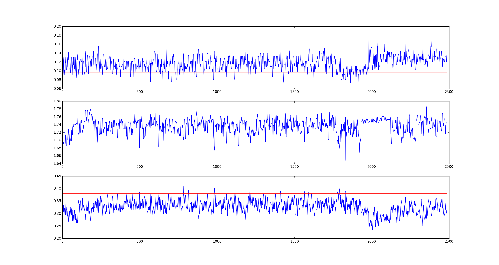
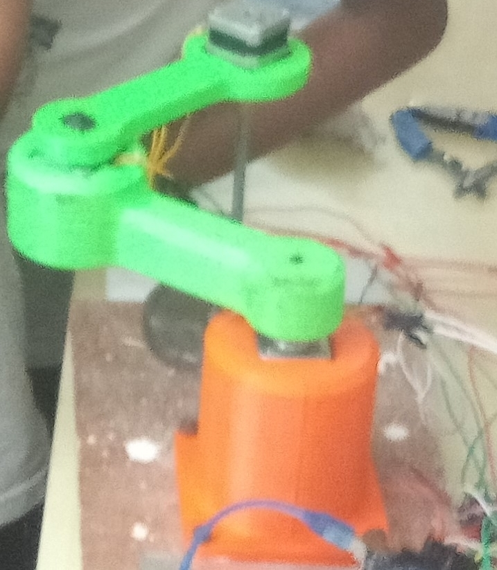
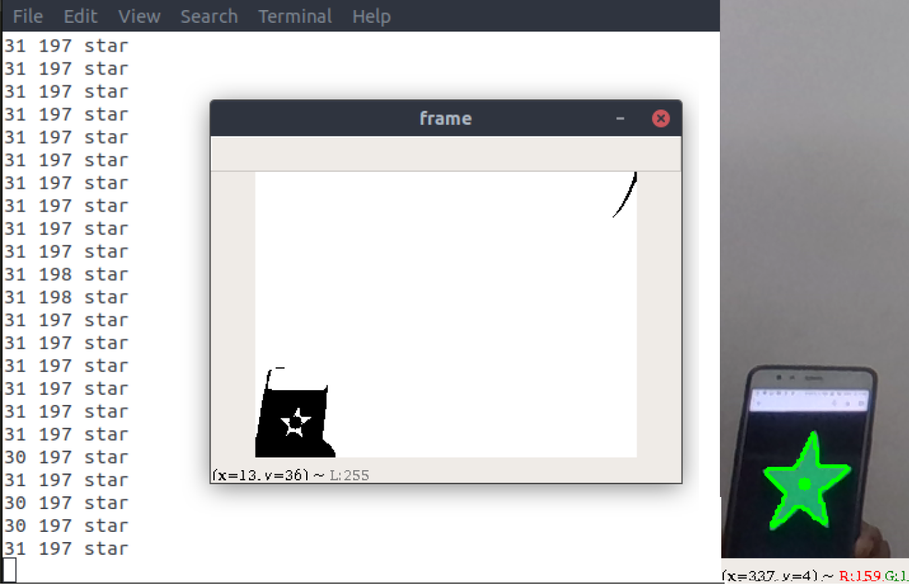
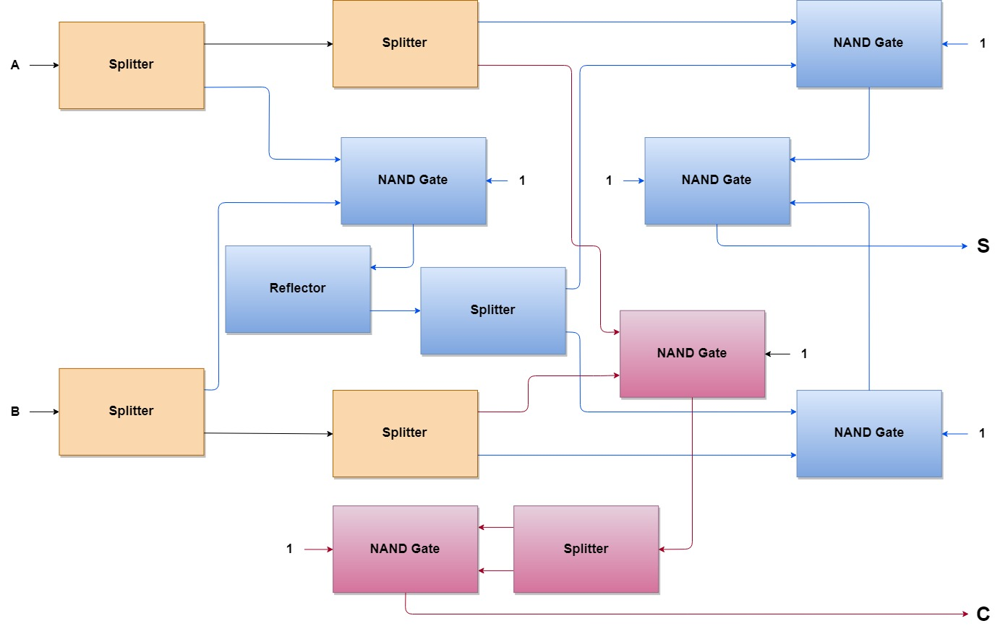
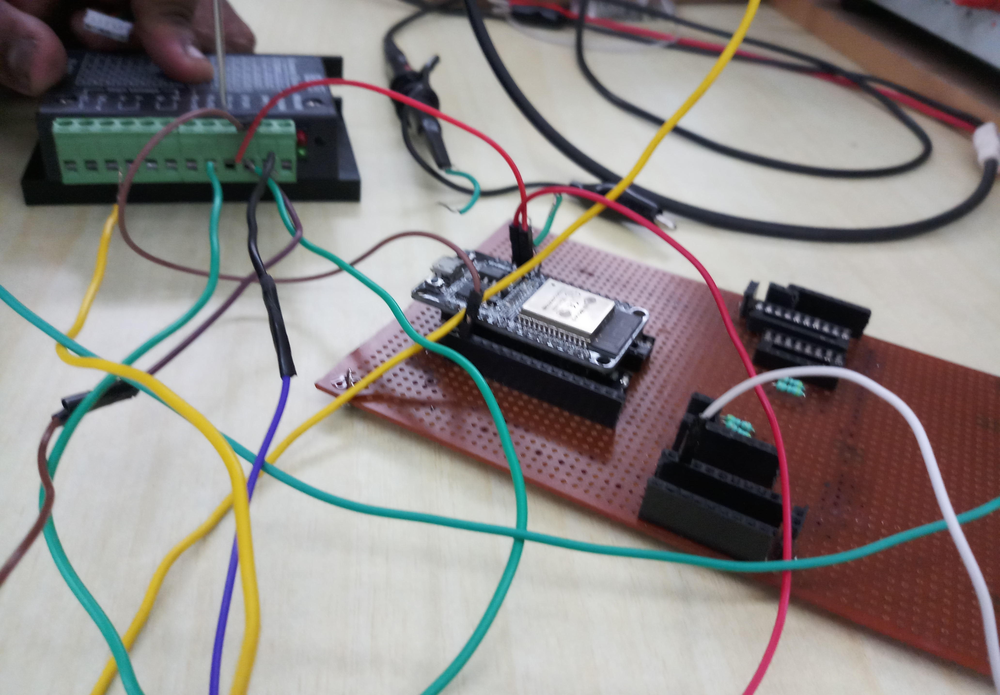
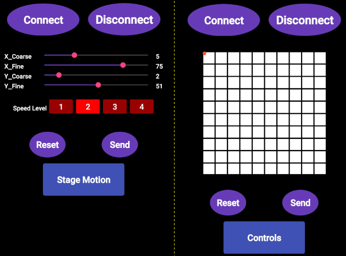
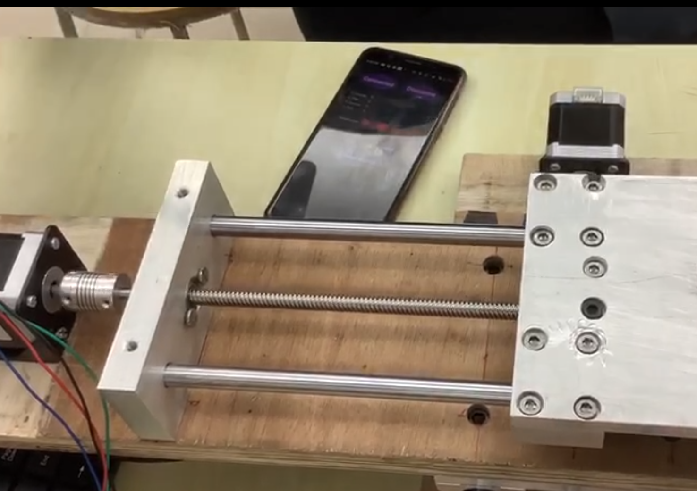

DRDO SASE UAV Fleet Challenge
Inter-IIT Tech Meet 8.0, IIT Roorkee
- Contributed to the development of the swarm network of drones by organizing and debugging the ROS system connecting the UAVs and the Ground Station
- Ideated on the pre-planned paths for the drones and suggested how the drones would be able to complete the problem statement: detect at least four out of five green cubes placed among a cluster of several objects in a 40m × 40m field
- Designed physical appendages for the attachment of peripherals such as the camera, the battery and the Raspberry Pi, and supported the team in the mechanical design and build of the drones

Localization of Drones
Prof Bharadwaj Amruthur
- Worked on the improvement of accuracy for the Time of Flight/Arrival (ToF/ToA) mechanism for the localization of drones by optimizing the required configuration for anchors in a 3-dimensional space
- Developed an algorithm for the implementation of the TDoA mechanism, adopting ideas from the development of the ToA algorithm
- Considered and commented qualitatively on the effect of the anchor clock drift for the working of the Time Difference of Arrival (TDoA) mechanism

Pick-and-Sort SCARA Robot Arm
Prof Abhishek Gupta
- Designed a 3-dimensional pick-and-sort robotic arm which processes the live view of the scan region and processes the image for objects of various shapes, further picking the objects and placing them in slots assigned for the shape.
- Supported the team in testing and in making vital decisions with respect to image processing

Exploiting Structural Instability to build Logic Gates and an Elementary Calculator
Prof Amuthan Ramabathiran
- Conducted a thorough review of literature on the conduction of binary information (HIGH/LOW) via a multi-unit buckling based mechanical system
- Designed a possible system of utilising buckling in order to build logic gates based on NAND logic in SolidWORKS
- Working on the physical development of the system and on the progression from logic gates to basic digital circuits like adders to a calculator as a whole




Bluetooth-controlled XY Precision Stage
Prof Prasanna Gandhi
- Designed the circuitry and electrical design required for an XY stage which functioned with stepper motor control using a lead screw mechanism
- Provided a precision of less than 100 microns to the system via stepper motor fine control (without micro-stepping)
- Developed the front-end mobile application required for controlling the XY stage, providing the capability for fine and coarse motion for each direction